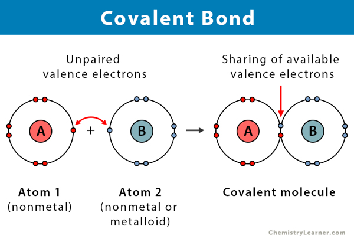
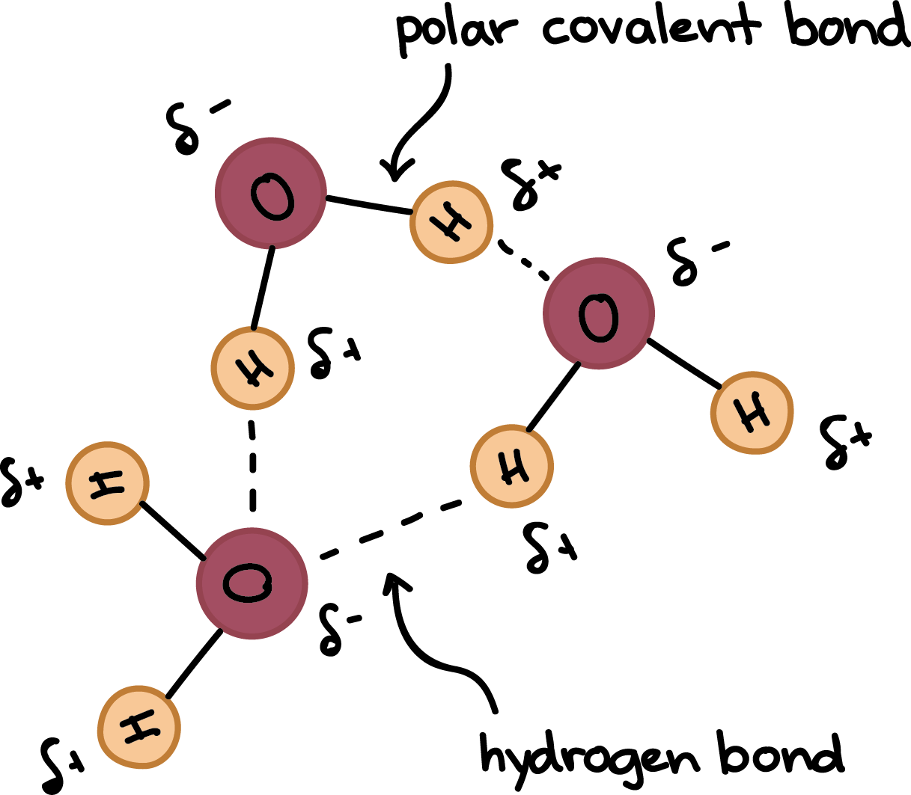
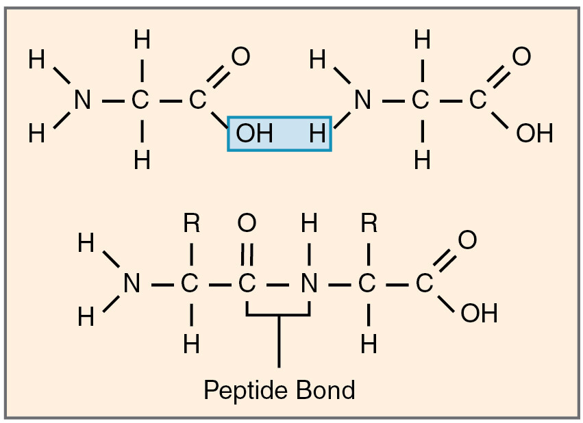
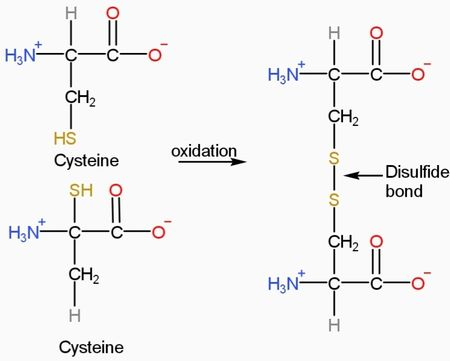
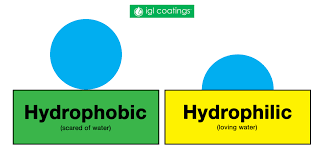
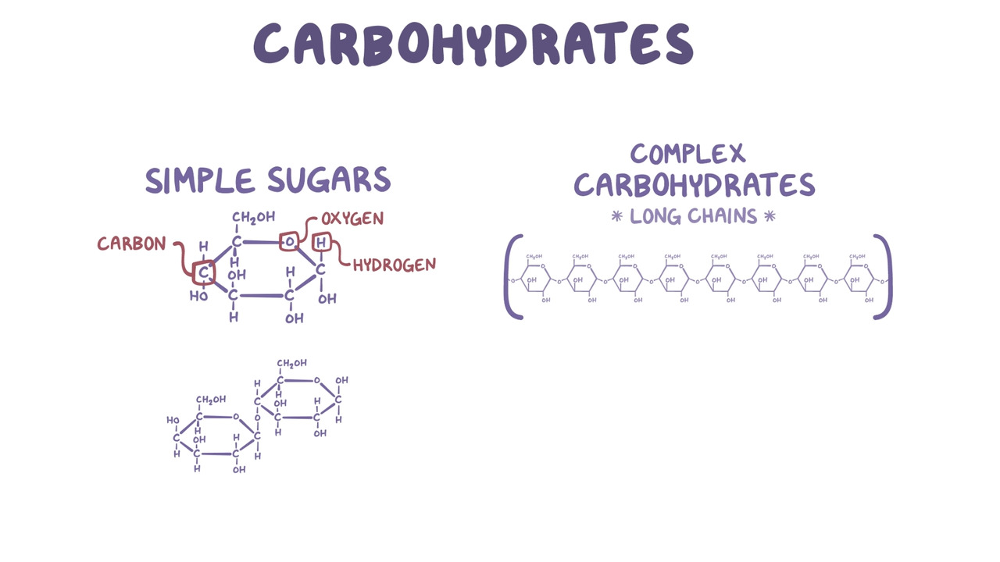
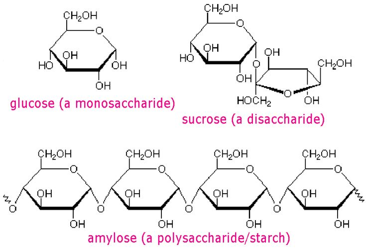
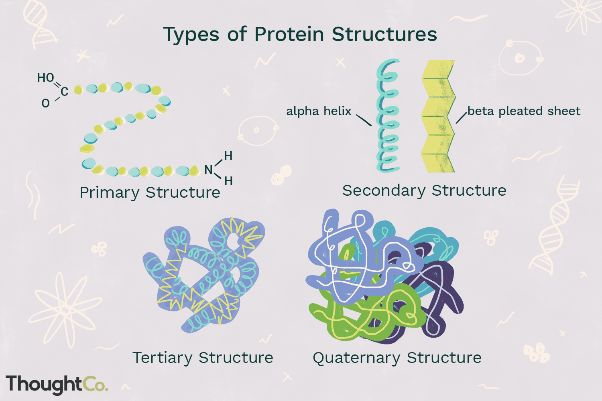
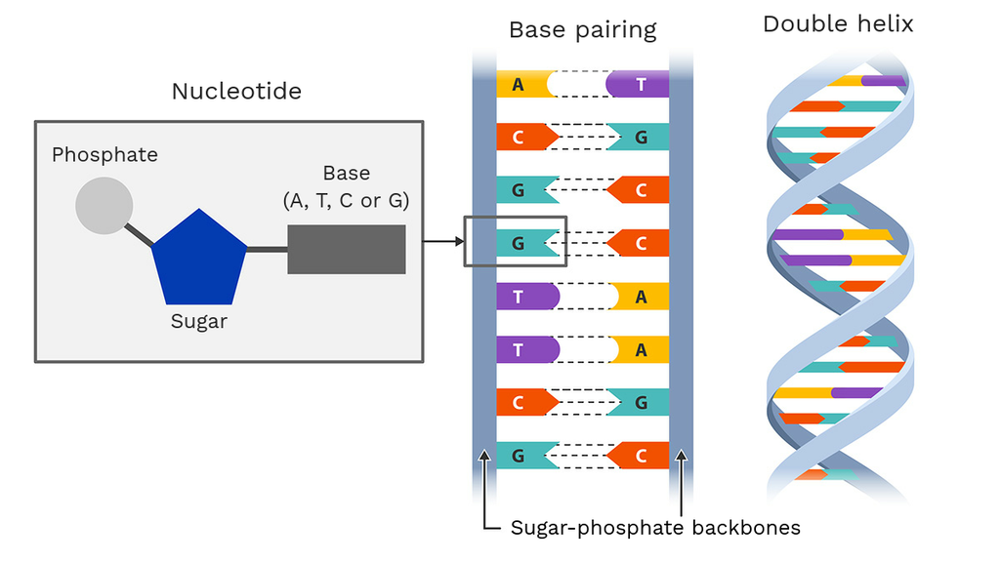

Chemistry of Life
Back to Main PageElements of Life:
--Major elements of life, these molecules combine to form cells that carry out biological processes--
Carbon (C)
Hydrogen (H)
Oxygen (O)
Nitrogen (N)
Phosphorus (P)
Sulfur (S)
Chemical Bonds:
Atoms interact through chemical bonds, which are formed by the sharing or transfer of electrons between atoms. The main types of chemical bonds are:
Ionic Bonds : Formed when one atom donates an electron to another, resulting in the formation of charged ions that are attracted to each other.
Covalent Bonds : Formed when two atoms share one or more pairs of electrons. This can be a single, double, or triple bond depending on the number of shared electron pairs.

Polar Covalent Bonds : electrons are shared unequally, created partial charge || EX. Water (H2O)
Nonpolar Covalent Bonds : electrons are shared equally, stable bonds and no partial charge || EX. Oxygen gas (O2)

Hydrogen Bonds : Occurs when a slightly positive hydrogen atom is attracted to a slightly negative atom (oxygen). These bonds are weaker than covalent and ionic bonds but play a crucial role in the structure and function of biological molecules.

EX. Water (H2O) molecules are held together by hydrogen bonds, which give water its unique properties such as high surface tension and the ability to dissolve many substances. It also essential for the creation of DNA structure, and protein folding
Peptide Bonds : A type of covalent bond that forms between the amino group of one amino acid and the carboxyl group of another amino acid, creating a bond that links amino acids together to form proteins.

Disulfide Bridges : Covalent bonds that form between the sulfur atoms of two cysteine amino acids (Sulfer containing amino acids), helping to stabilize the three-dimensional structure of proteins.

Hydrophobic : Substances that do not interact well with water, they are nonpolar and tend to cluster together in an aqueous environment.
Hydrophilic : Substances that interact well with water, they are polar and tend to dissolve in an aqueous environment.

Structure of Water:
Water is the most important molecule for life.
- Water (H2O)
more electronegative due to having 2 oxygen atoms (oxygen are negatively charged) and only 1 hydrogen atom (hydrogen are positively charged) which creates partial charges and gives water molecules is polarity property
Properties of Water:
Cohesion : the attraction between water molecules due to hydrogen bonding, which allows water to stick together and create surface tension.
EX. water moving through plant vessels (xylem) and water droplets forming on a surface.
Adhesion : the attraction between water molecules and other substances, which allows water to stick to surfaces and move against gravity.
EX. capillary action, where water can move up plant vessels due to adhesion to the vessel walls and cohesion between water molecules.
High Specific Heat : water can absorb a lot of heat energy without a significant change in temperature, which helps regulate temperature in organisms and environments.
EX. Oceans, Lakes, Human body Temperature (homeostasis)
Acids, Bases, and pH:
The pH scale measures hydrogen ion concentration
Ranges : 0 - 14
| pH range | Type of Solution |
|---|---|
| 0 - 6 | Acidic (high concentration of H+ ions) |
| 7 | Neutral (equal concentration of H+ and OH- ions) |
| 8 - 14 | Basic (high concentration of OH- ions, also known as alkaline) |
Importance of pH : Many biological processes are sensitive to changes in pH, and maintaining a stable pH is crucial for the proper functioning of cells, proteins. Enzymes, which are proteins that catalyze biochemical reactions, often have an optimal pH range in which they function best. Deviations from this optimal pH can lead to decreased enzyme activity and can disrupt cellular processes. When proteins are exposed to an difference in pH level that not in it optimal range, it can cause the protein to denature which can result in the lost of it's structure and function of the cell, sometimes it can be reversible but most of the time it's irreversible.
Buffers: A substance that resists change in pH levels by absorbing excess H+ ions when the solution is too acidic or releasing H+ ions when the solution is too basic.
Buffers are important for maintaining a stable pH level for an environment and helps maintain homeostasis in an organism.
Biological Macromolecules:
Proteins, Carbohydrates, Lipids and Nucleic Acids are the four major macromolecules that living organisms rely on.
Macromolecules are large organic molecules called polymers that are built from smaller units called monomers, they form through polymerization.
Monomers : smaller units that make up macromolecules / small building block molecules that can be bonded together to form polymers
Polymers : A large molecule made of many monomers through bonding / long chain of monomers that are bonded together
Dehydration Synthesis / Condensation Synthesis : The chemical reaction that builds polymers through the removal of water molecules
Hydrolysis : The chemical reaction that breaks down polymers by adding water molecules, water is added to break the bonds between monomers
Carbohydrates (Monomer / Monosaccharide) : Composed of Carbon (C), Hydrogen (H), and Oxygen (O) in a 1C:2H:1O ratio

usually found in foods and serve as a primary source of energy for the body
EX. Glucose, Fructose, Galactose
Monosaccharides : simple sugars that are the building blocks of carbohydrates, they can be used for energy or can be linked together to form more complex carbohydrates.
Disaccharides / Polysaccharides : formed when two monosaccharides are joined together through dehydration synthesis, they can be broken down into monosaccharides through hydrolysis. EX. sucrose, starch, cellulose

Starch : a polysaccharide that serves as a storage form of energy in plants, it is made up of glucose monomers.
Glycogen : a polysaccharide that serves as a storage form of energy in animals, it is made up of glucose monomers.
Cellulose : a polysaccharide that serves as a structural component in plant cell walls, it is made up of glucose monomers.
Lipids (Monomer / Glycerol and Fatty Acids) : Composed of Carbon (C), Hydrogen (H), and Oxygen (O) but in a much lower ratio of oxygen compared to carbohydrates, they are hydrophobic
**Phospholipids** : A type of lipid that is a major component of cell membranes, they have a hydrophilic head and two hydrophobic tails, which allows them to form a bilayer that separates the inside of the cell from the outside environment.
Steroids : A type of lipid that essential for cell structure and communication. Defined by their unique four-ring carbon skeleton.
Proteins (Monomer / Amino Acids) : Composed of Carbon (C), Hydrogen (H), Oxygen (O), Nitrogen (N) and sometimes Sulfur (S), they are essential for the structure, function, and regulation of the body's tissues and organs.
Protein Functions : enzymes (catalysts that speed up chemical reactions), structural support (collagen in tissues), transport (hemoglobin in blood), communication (hormones and receptors), immune system (antibodies)
Structures of Proteins : Amino Group (NH2), Carboxyl Group (COOH), R Group (side chain that determines the properties of the amino acid), Hydrogen Atom (H) attached to the central carbon (alpha carbon)
Protein Structure Levels:
| Level | Description |
|---|---|
| Primary | The unique sequence of amino acids in a polypeptide chain, determined by the genetic code. |
| Secondary | The local folding of the polypeptide chain into structures such as alpha helix and beta pleated sheets, stabilized by hydrogen bonds between the backbone atoms of the amino acids. |
| Tertiary | The overall three-dimensional shape of a polypeptide chain, determined by interactions between the R groups of the amino acids, including hydrogen bonds, ionic bonds, disulfide bridges, and hydrophobic interactions. |
| Quaternary | The collection of multiple polypeptide chains to form a functional protein, stabilized by the same types of bonds as tertiary structure. |

Nucleic Acids (Monomer / Nucleotides) : Composed of Carbon (C), Hydrogen (H), Oxygen (O), Nitrogen (N) and Phosphorus (P), they are essential for the storage and transmission of genetic information in cells.
Main Types of Nucleic Acids : DNA and RNA
Functions of Nucleic Acids : DNA stores genetic information, RNA is involved in protein synthesis and gene regulation.
Components of Nucleotides (Monomer Form) : a five-carbon sugar, a phosphate group, and a nitrogenous base (adenine (A), guanine (G), cytosine (C), thymine (T) in DNA and adenine (A), guanine (G), cytosine (C), uracil (U) in RNA)

| DNA / RNA | Nitrogenous Base Pairs |
|---|---|
| DNA | Adenine (A) + Thymine (T) |
| DNA | Guanine (G) + Cytosine (C) |
| RNA | Adenine (A) + Uracil (U) |
| RNA | Guanine (G) + Cytosine (C) |